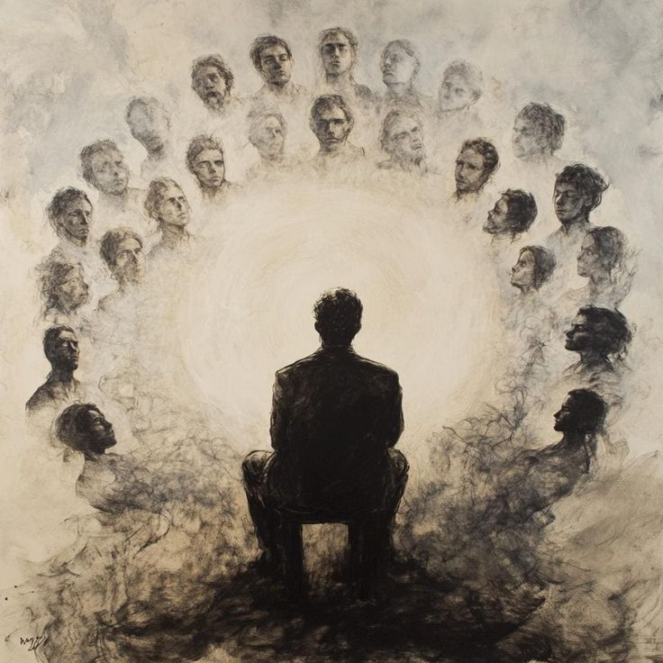
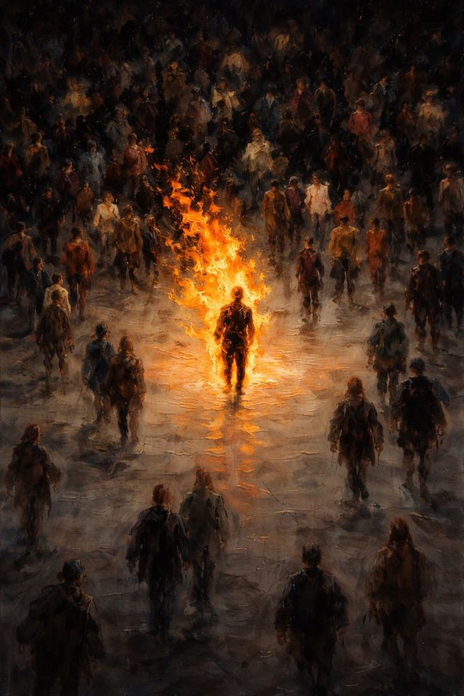
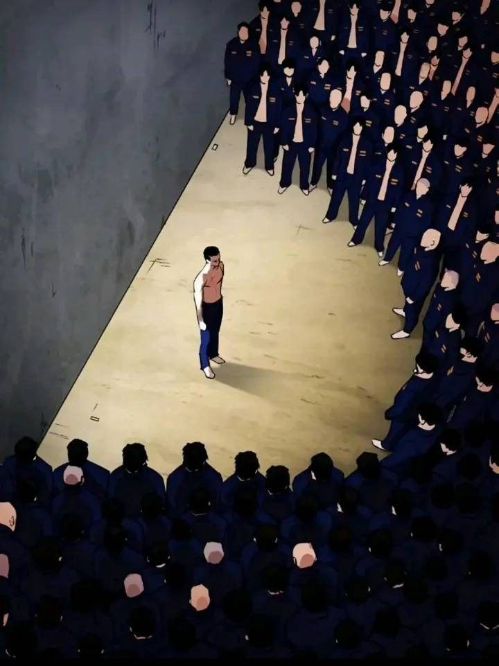
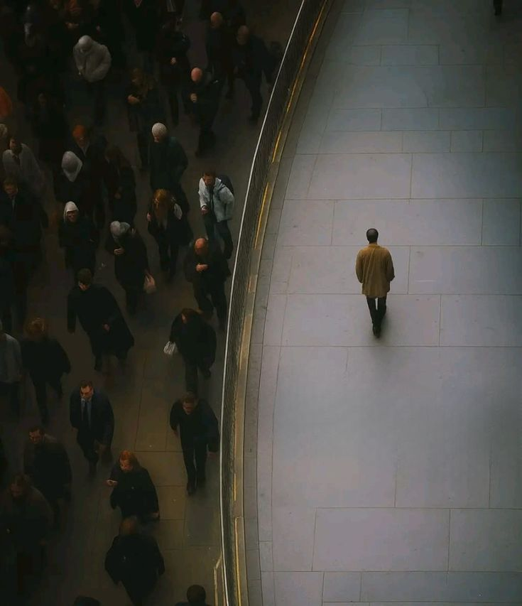
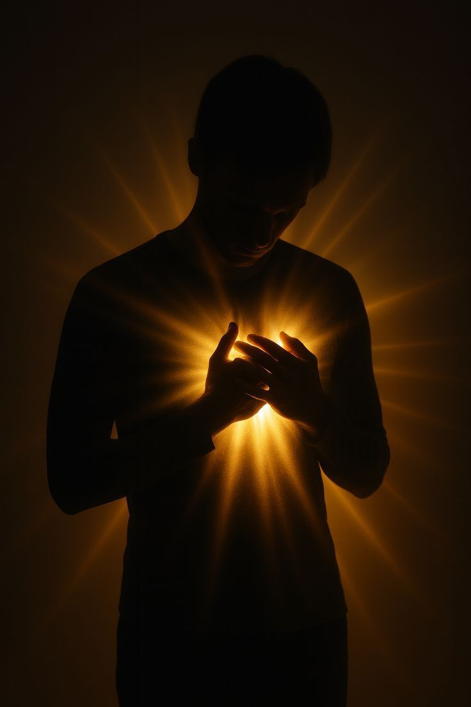

Karim Saragih Simarmata
Karim Saragih Simarmata
Berteman dengan Siapa Saja, Ambil Sisi Positifnya
Kita tidak pernah bisa sepenuhnya memilih di lingkungan seperti apa kita akan hidup, tumbuh, atau bekerja.
Ada kalanya kita terdampar di pergaulan yang jauh dari kata ideal. Ada juga masa di mana orang-orang di sekitar kita punya kebiasaan yang tidak sejalan dengan nilai yang kita pegang.
Tapi itu bukan alasan untuk menutup diri. Berteman dengan siapa saja tetap penting, karena dari situlah kita belajar membaca dunia dengan lebih luas.
Kuncinya sederhana: ambil sisi positif dari setiap orang yang kita temui, dan saring apa yang tidak sejalan dengan diri kita.
Justru dari pergaulan yang beragam itulah, kita belajar mana yang layak dijadikan panutan, dan mana yang cukup dijadikan pelajaran.

Ingat: Bergaul luas bukan berarti kehilangan arah. Selama kita tahu apa yang kita pegang, kita bisa belajar dari siapa saja tanpa harus menjadi seperti mereka.
Memiliki Prinsip dan Pendirian yang Kuat
Berlian tidak berubah menjadi batu biasa hanya karena terkubur di dalam lumpur. Ia tetap berlian, karena struktur dan nilainya sudah terbentuk jauh sebelum ia ditemukan.
Begitu juga dengan kita. Prinsip yang kuat adalah fondasi yang membuat seseorang tidak mudah goyah, apa pun keadaan di sekelilingnya.
Punya pendirian bukan berarti kaku atau menutup diri dari masukan. Artinya, kita tahu batas mana yang tidak boleh dilanggar demi diterima oleh lingkungan.
Orang dengan prinsip kuat bisa berdiri di tengah keramaian tanpa harus kehilangan jati dirinya sendiri.
Semakin jelas apa yang kita pegang, semakin sulit bagi lingkungan untuk mengikis siapa diri kita sebenarnya.
"Prinsip bukan tembok yang mengurung, melainkan akar yang membuat kita tetap berdiri saat angin datang."

Bangun Mental agar Tidak Mudah Terpengaruh
Lingkungan punya kekuatan besar untuk membentuk siapa diri kita, tapi kekuatan itu hanya bekerja kalau kita membiarkannya.
Mental yang kuat adalah tameng pertama. Ia yang membuat kita bisa berada di tengah tekanan sosial tanpa ikut larut di dalamnya.
Bukan berarti kita harus jadi kaku atau anti sosial. Tapi kita perlu tahu kapan harus bilang tidak, dan kapan cukup mengangguk tanpa benar-benar terlibat.
Semakin sering kita melatih diri untuk berpikir sebelum ikut arus, semakin kuat pula daya tahan kita terhadap pengaruh yang tidak sehat.
Mental yang kokoh tidak lahir dalam semalam. Ia terbentuk dari kebiasaan kecil: berani berbeda pendapat, berani menolak, dan berani jujur pada diri sendiri.

Jika Lingkungan Sudah Toxic, Berani Menjauh
Ada batas antara bertahan dan menyiksa diri sendiri. Ketika sebuah lingkungan sudah terus-menerus menjatuhkan, menjauh bukan tanda kalah.
Justru menjauh dari lingkungan yang toxic adalah bentuk keberanian yang jarang diakui. Butuh nyali untuk keluar dari zona yang sudah terlanjur nyaman, meski menyakitkan.
Kadang kita bertahan karena takut sendirian, takut kehilangan status, atau takut dianggap aneh. Padahal, bertahan di tempat yang salah hanya akan mengikis diri kita pelan-pelan.
Mencari lingkungan yang lebih baik bukan pelarian. Itu adalah bentuk tanggung jawab kita terhadap masa depan diri sendiri.
Berlian yang dipindahkan dari lumpur ke tempat yang layak, tidak kehilangan apa pun — ia justru semakin terlihat berkilau.
"Menjauh dari yang salah bukan kekalahan. Itu adalah cara kita menyelamatkan versi terbaik dari diri sendiri."

Tetap Beribadah sebagai Sumber Ketenangan
Di tengah tekanan lingkungan yang tidak selalu ramah, ada satu hal yang tidak boleh ikut hilang: hubungan kita dengan Sang Pencipta.
Ibadah bukan sekadar rutinitas. Ia adalah jangkar yang menahan kita agar tidak ikut hanyut, sekaligus tempat kita pulang saat dunia terasa berat.
Semakin sibuk dan semakin keras lingkungan menekan, semakin penting pula kita menjaga waktu untuk diam sejenak dan mengingat siapa yang menciptakan kita.
Bagi seorang Muslim, seberat apa pun perjalanan hidup, tetaplah berusaha menjaga sholat. Sebab dari sanalah ketenangan yang sesungguhnya berasal, bukan dari validasi lingkungan sekitar.
Selagi ibadah masih dijaga, hati akan selalu punya tempat untuk kembali, seberat apa pun ujian yang datang.

Renungan: Seberapa pun keras lingkungan menekan, sholat yang dijaga akan selalu menjadi ruang paling tenang untuk kembali pada diri sendiri.
Penutup: Berlian yang Tak Pernah Kehilangan Kilaunya
Berlian tidak pernah meminta izin pada lumpur untuk tetap menjadi berlian. Ia hanya perlu waktu, sampai seseorang cukup jeli untuk melihat kilaunya di tengah kegelapan.
Begitu juga dengan kita. Lingkungan boleh berubah, pergaulan boleh datang dan pergi, tapi nilai diri yang sudah kita bangun tidak akan luntur hanya karena tempat yang kurang baik.
Selama kita tetap berpegang pada prinsip, menjaga mental, berani menjauh dari yang merusak, dan tidak pernah putus dari ibadah — kilau itu akan selalu ada, menunggu waktu yang tepat untuk terlihat.
Jadi, di mana pun kamu berada hari ini, ingatlah: berlian tetaplah berlian, di lumpur mana pun ia terkubur.